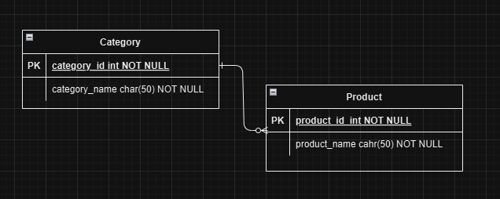

WinFormsApp2
Koostatud uus projekt Visual Studio 2022 programmis. Programm saab databaselt productID ja categoryID, mis on juba ette määratud. Kasutaja aga saab muuta, lisada ja kustutada, kuid kõik muudatused tuleb salvestada "Save" nupuga.
